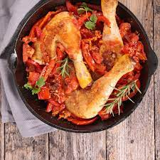

Poulet basquaise

Ingrédients
-
Tomates
3Kg
-
Poivron
450g
-
Oigon
2 pièces
-
Gousses d'ail
2 pièces
-
Vin blanc
13.5cl
-
Huile d'olive
4 c.à.s
-
Sel
1 pincée
-
Poivre
1 pincée
-
Poulet
6 morceaux
-
Bouquet garni
1 pièce
Préparation
- Hacher l'oignon et l'ail. Couper les tomates en morceaux et détailler
les poivrons en lanières.
- Faire chauffer 4 cuillères à soupe d'huile dans une cocotte. Y faire
dorer les oignons, l'ail et les poivron. Laisser cuire 5 min.
- Ajouter les tomates à la cocotte, saler, poivrer. Couvrir et laisser
mijoter 20 min.
- Dans une sauteuse, faire dorer dans l'huile d'olive les morceaux de
poulet salés et
poivrés.
- Lorsqu'ils sont dorés, les ajouter aux légumes, couvrir, ajouter le
bouquet garni et
le vin blanc et c'est parti pour 35 min de cuisson.